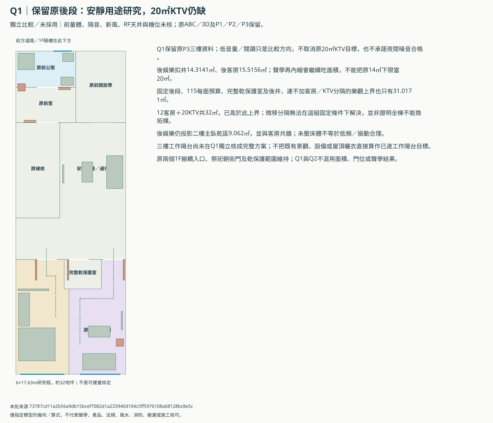
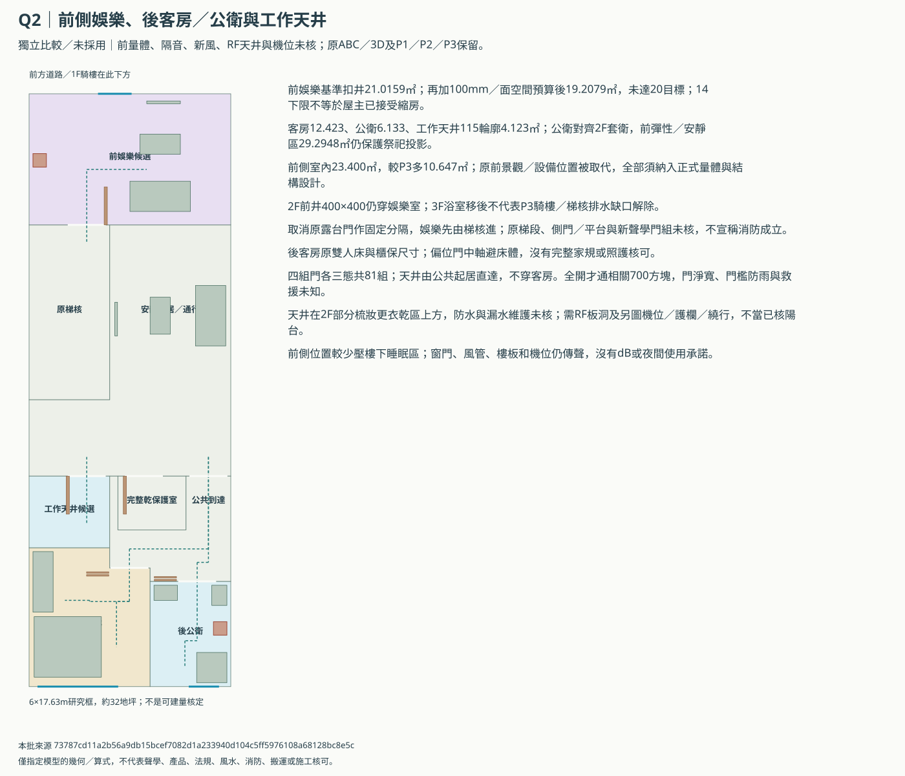
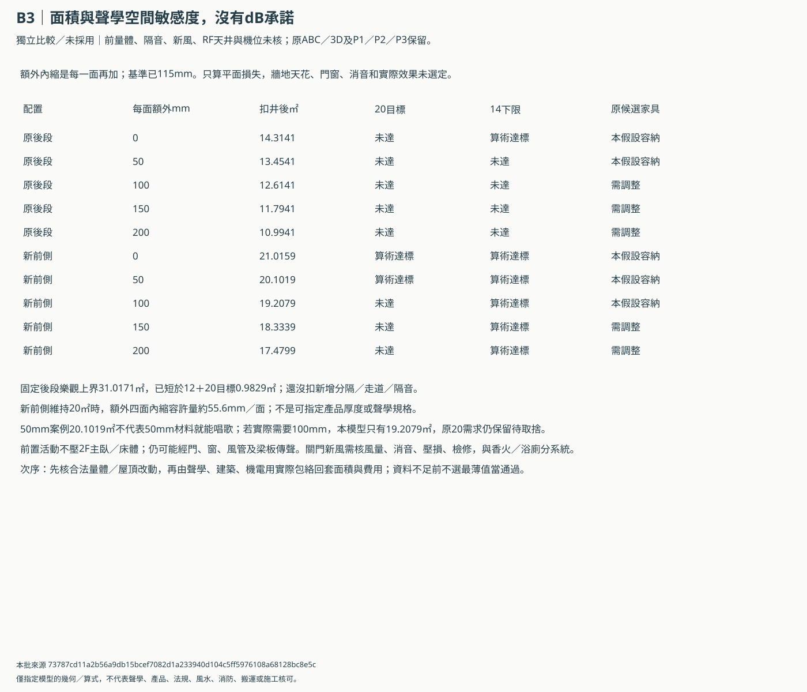
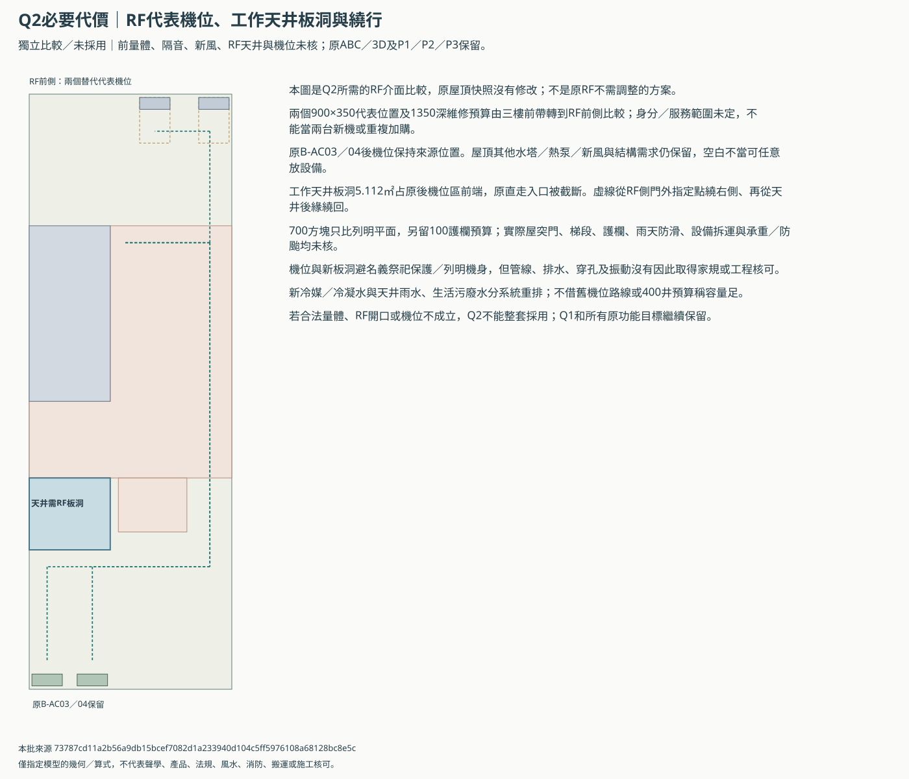

B三樓：娛樂配置與隔音空間比較
獨立比較／未採用。保留原20㎡KTV、12㎡客房、5㎡公衛及4㎡工作陽台目標；Q1／Q2不混用，原ABC／3D與P1／P2／P3保留。
前置娛樂較能避樓下主臥及後客房，但需要更大的正式前室內量體、RF機位／天井及聲學新風合圖。100mm額外內縮仍未達20㎡，只保留優先研究方向；原後段與所有需求不取消。
Q2後客房12.423、公衛6.133、工作天井115輪廓4.123㎡；前娛樂扣井基準21.0159㎡，再加100mm／面空間預算後19.2079㎡，仍低於20目標。
Q1保留後段與面積缺口


Q2前側娛樂的完整三樓比較


隔音空間敏感度與原需求對帳


必要的RF機位／天井／維修代價


原需求逐項保留
| ID | 目標㎡ | 本模型㎡ | 狀態 |
|---|---|---|---|
| B.floor-3.flex_b | 14.0 | 29.2948 | 面積算術達標，功能／合法未核 |
| B.floor-3.ktv | 20.0 | 19.2079 | 原目標仍缺 |
| B.floor-3.bath_b3 | 5.0 | 6.1330 | 面積算術達標，功能／合法未核 |
| B.floor-3.guest_b | 12.0 | 12.4230 | 面積算術達標，功能／合法未核 |
| B.floor-3.balcony_b3 | 4.0 | 4.1230 | 面積算術達標，功能／合法未核 |
先決條件與未解代價
- Q1保留現行後段，適合先比安靜閱讀／低音量劇院；不代表夜間聲學通過，也沒有取消原20㎡KTV需求。
- Q2前側娛樂、後客房／公衛與工作天井只是獨立配置研究，未採用、未併主3D；原ABC、P1／P2／P3、兩個1F搬轎入口各三態及RF快照保留。
- KTV20／客房12／3F公衛5／工作陽台4㎡及前側彈性14㎡原目標均列帳，未因研究方向改正式需求或把KTV14下限當20目標。
- Q2三樓前側由12.753增為23.400㎡名義室內量體，增加10.647㎡；約32地坪外框不等於合法可建量，也不是日後可自行封陽台。
- 前側整塊娛樂須取消本層原景觀／設備配置，兩個代表機位另比RF前側；它們不是已確認兩台新機，也不重複加購或默認取代現有B-AC03／04。
- 後工作天井名義5.112㎡、115假設4.123㎡，需RF局部開口及護欄／防水／排水；因此是屋頂需改的條件案，不能說原RF完全不用動或已核工作陽台。
- 工作天井由公共起居區直接進入，不穿客房；1130名義外門、門檻防雨及實際完成淨寬未核，晾衣架與家務操作仍需另排。
- RF天井會截斷原後機位區的直行入口，另列繞行700方塊；不含實際屋突門片、梯段、雨天防滑及整機搬運。所有原屋頂設備需求仍保留，未排滿不當空間已足。
- 額外0／50／100／150／200mm四面內縮只是聲學空間敏感度，沒有dB、隔音等級或產品；不能挑50mm就宣稱能唱歌，也不能將最薄案例當完工面積。
- 2F前管井仍須穿3F，Q2在娛樂室留同一400×400；不能因3F公衛移後就刪2F通氣井或宣稱P3騎樓排水缺口解除。
- 前KTV比後段少壓樓下主臥，但前外窗、梯核門、天花地坪及風管仍傳聲；使用時的窗門、消音與新風工作點須聲學／建築／機電同核，沒有低頻或鄰房噪音承諾。
- 兩個濕系統不混接：公衛污廢水／通氣與工作天井雨水分開核，400井預算不等於能容納全部管線。實際高程、降板、合法終端與2F／1F影響未知。
- 3F後公衛對齊2F套衛輪廓，避免新增浴廁壓主臥乾區；工作天井仍在2F部分梳妝／更衣乾區上方，需核防水、雨水及漏水維護，不能只因未壓床就說風水或防水成立。
- 神明堂／乾背櫃完整投影不放床、浴廁或娛樂；工作天井亦避武轎庫。明列平面避讓不當全案家規／風水核可，管線、穿孔及振動仍未核。
- 客床1800×2000、衣櫃1800×600、娛樂沙發／桌／螢幕及三件衛浴尺寸保留；不保證原器材全容納、座位數或實際門淨寬。
- 新增室內量體、屋頂機位／天井、聲學構造及關門新風都需正式資料；目前不要求屋主立刻接受縮KTV、取消陽台或搬到A／C。